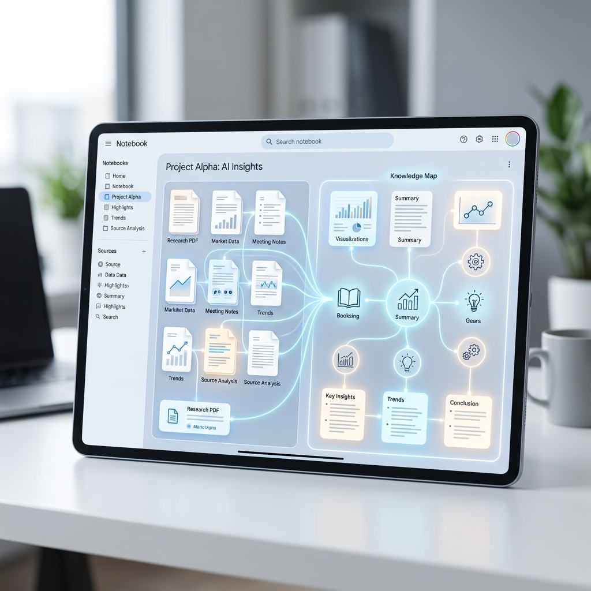

Your Business Intelligence, Supercharged: How NotebookLM is Revolutionizing Research

Information overload is the silent killer of small business productivity. You have years of PDFs, meeting notes, and spreadsheets, but finding the one insight you need is like finding a needle in a digital haystack. NotebookLM is the magnet that pulls that needle right to the surface. (NotebookLM)
What is NotebookLM?
NotebookLM is an AI-powered research assistant that "grounds" its knowledge in your specific documents. Unlike a general chatbot that might hallucinate, NotebookLM only knows what you tell it. It summarizes, synthesizes, and answers questions based entirely on the sources you provide.
Why This Matters for Your Business
Imagine being able to ask an AI, "What did we promise the client in that 2024 contract?" or "Summarize our sales performance over the last three Q4s," and getting a cited answer in seconds. At Kemper Design Services, we use NotebookLM to help our clients organize their institutional knowledge so they can stop searching and start doing.
Trending Tasks & Features
- Instant FAQ Generation: Turning your service manuals into a searchable, interactive FAQ for your team.
- Deep Synthesis: Connecting multiple documents to find hidden patterns or contradictions in your business data.
- Source Citations: Every answer comes with a direct link to the source document, ensuring 100% accuracy.
- Collaborative Research: Sharing "notebooks" with your team so everyone is working from the same pool of intelligence.
The ROI: Intelligence at the Speed of Thought
The average employee spends 20% of their week just searching for information. By centralizing your research in NotebookLM, you reclaim those hours. For a small team, that is the equivalent of adding a full-time researcher to the payroll for free.